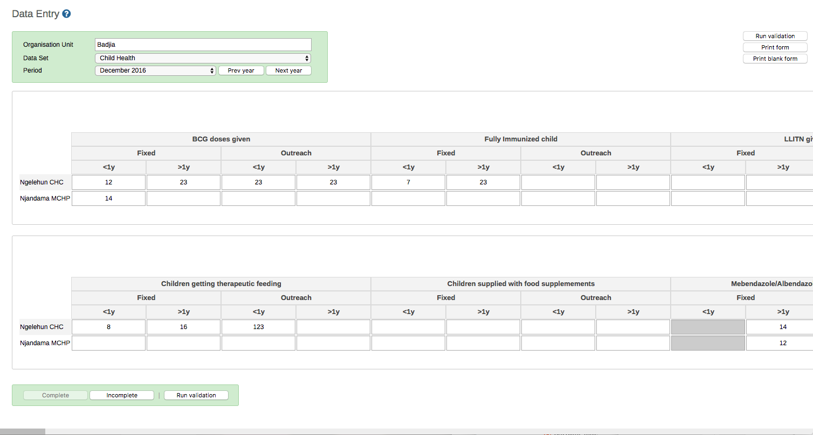

|  |
It can be useful to enter data for multiple organisation units in the same data entry form, for instance if there are few data elements in the form and a huge number of organisation units in the hierarchy. In that case, you can enable multi-organisation unit data entry.
![[Note]](../Resources/note.png)
|
Note |
|---|---|
|
Multi-organisation unit data entry only works for section forms. |
-
Open the System Settings app.
-
Select Enable multi-organisation unit forms.
-
In the Data Entry app, select the organisation unit immediately above the organisation unit you want to enter data for in the organisation unit hierarchy.
Data elements will appear as columns and organisation units as rows in the form.
Note The data entry forms should still be assigned to the facilities that you actually enter data for, that is the organisation units now appearing in the form.